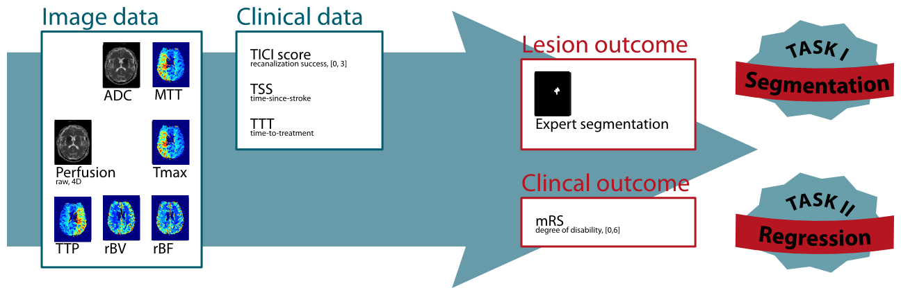

Welcome to Ischemic Stroke Lesion Segmentation (ISLES) 2016, a medical image segmentation challenge at the International Conference on Medical Image Computing and Computer Assisted Intervention (MICCAI) 2016 (October 17-21st).

ISLES 2016 provides a segmentation and a regression task:
Task I: Lesion outcome prediction
Task II: Clinical outcome prediction
A public dataset of diverse ischemic stroke cases and a suitable automatic evaluation procedure will be made available. The provided data allows the participating methods to combine image and clinical information in any combination to achieve the tasks' goals.
On this page, you can find details on how the challenge works in the about section, the clinical and research motivation behind it, the rules of how to participate, the data description and the evaluation scheme.
All dates are subject to change, please keep an eye on the important notices.
| Official launch of the website | |
| Registration opens and distribution of training data | |
| Abstract submission deadline | |
| Early-bird reduced registration fees | |
| Opening of the evaluation system | |
| Distribution of test data | |
| Deadline for submitting test data results | |
| MICCAI 2016 workshop and award presentation | |
| Training data and evaluation are made public |
Medical image processing comprises a large number of tasks, for which new methods are regularly proposed. But, more often than desirable, it is difficult to compare their fitness, as the reported results are obtained on private datasets. Challenges aim to overcome these shortcomings by providing (1) a public dataset that reflects the diversity of the problem and (2) a platform for a fair and direct comparison of methods with suitable evaluation measures. Thus, the scientific progress is promoted (see grand-challenge.org for a detailed rationale behind challenges).
During the recent years, the need for challenges has been emphasized in the medical image processing community. Especially in the scope of the MICCAI and International Symposium on Biomedical Imaging (ISBI) conferences, a number of challenges have been already successfully organized. All of these are collected centrally at grand-challenges.org. Last year, we organized with ISLES 2015 a successful ischemic stoke lesion segmentation challenges with a similar task.
The ISLES 2016 challenge treats the challenging problem of stroke lesion/clinical outcome prediction from acute MRI scans. To this end, we will provide acute MRI scans of a large number of acute stroke cases and associated clinical parameters. The associated ground truth is the final lesion volume (Task I) as manually segmented in 3 to 9 month follow-up scans, and the clinical mRM score (Task II) denoting the degree of disability.
Interested participants can download a set of training cases (data description) with associated expert segmentations of the stroke lesions to train and evaluate their approach. Shortly before MICCAI 2016 takes place, a set of test cases will be made available and the participants upload their segmentation results in the form of binary images (Task I) respectively their mRM score predictions (Task II) as well as a abstract describing their method. The organizers then evaluate each case and establish a ranking of the participating teams. At the MICCAI 2016 conference, the results will be presented in the scope of a workshop and the results discussed together with invited experts. Each team will have the opportunity to present their method as a poster and, furthermore, a number of selected teams will be asked to hold a small presentation detailing their method. A number of high ranking and particularly interesting approaches will be invited to contribute to the workshops LNCS post-proceedings volume. After the challenge, the organizers and participants will together compose a high-impact journal paper to publish their findings.
The typical stroke treatment procedure involves the acquisition of brain images at some time-since-stroke (TSS). Depending on the these and other factors a treatment decision is made and an intervention takes place after a time-to-treatment (TTT). The success of this intervention is assessed via the standardized TICI score. After the effects stabilized, the final clinical outcome is determined with the mRM and the final lesion outcome by brain imaging.
The watchword of most stroke organizations is time is brain. The treating physician has to decide in each case individually, whether the risky intervention (be it thrombectomy or thormbolysis) is justified by the potential gain, based solely on the lesion appearance, the time-since-stroke (TSS) and her or his personal experience. A method to reliably predict the actual lesion and clinical outcome from the acute scans alone would provide invaluable evidence for the clinical decision finding process. By taking the time-to-treatment into account, the prediction can be readily adapted depending on the availability of the treatment facilities.
Each team wishing to participate in the ISLES challenge is required to:
All types of automatic methods producing the desired end-points are welcome. We specifically do not restrict the participation to new, innovative and unpublished methods, but invite research groups from all over the world to enter their existing method in the competition. Semi-automatic methods are eligible for participation and will appear in the ranking, but out of competition, as it is impossible to rate the influence of the manual steps in a fair manner.
ISLES is organized as part of a larger, four-part, full-day workshop at the MICCAI 2016 with the following organizational structure:
The four events should be regarded as a single workshop and a single registration allows to visit all of these and to participate in them. Please note that each part has its own rules of active participation, which can be found on their respective web-pages. The workshop schedule can be found here. Note that the final ordering is still subject to change.
All challenges and the workshop treat brain injury. Double contributions are highly welcome and only one registration at the MICCAI 2016 workshop is required.
Participants are free to use the training data from ISLES to evaluate methods submitted to BrainLeS, but are encouraged to also participate in the challenge too. In such case, they are not required to submit the abstract to ISLES, instead their (accepted) BrainLeS manuscript will suffice, as long as it states the results obtained on the training set.
ISLES requires the participating teams to submit an abstract of one page in LNCS format, which will be reviewed by the organizers. The text will be distributed among the MICCAI 2016 attendees on the MICCAI 2016 USB drive and uploaded to the challenge result web-page. See dates for the associated deadlines.
Requirements
Review
Submission
Poster
Presentation
Some selected methods from the three challenges and the workshop will be called upon to contribute an article to the BrainLes workshops Springer LNCS post-proceedings special issue with a longer version of their article. The respective participants are informed during the challenge and given a few weeks after the MICCAI to compose their article, which will have to undergo another review cycle.
A team can submit results from multiple methods, but an extra registration to the MICCAI 2016 challenge is required for each additionally submitted result.
By registering, each team agrees to use the provided data only in the scope of the workshop and neither pass it on to a third party nor use it for other publications. After the workshop took place, the data will be released under a research license. No copyright transfer of any kind will take place, except in the case of a contribution to the LNCS post-proceedings special issue.
Uncompressed Neuroimaging Informatics Technology Initiative (NIfTI) format: *.nii.
(I/O libraries: MedPy (Python), NiftiLib (C,Java,Matlab,Python), Nibabel (Python), Tools for NIfTI and ANALYZE image (Matlab), ITK (C++))
All MRI sequences are skull-stripped and anonymization was performed. No other pre-processing, such as re-sampling or co-registration is performed. This allows each participant to employ their favorite algorithms. For the skull stripping of the structural images the stripTs tool was utilized. For the PWI images, a brain mask was created with the BET algorithm from FSL and the resulting mask was applied to the corresponding PWI image with the fslmath tool from FSL. Varying hand crafted parameters were chosen for the BET algorithm, depending on the respective MRI sequence. The decision of using two different algorithms for the skull stripping rests upon qualitative assessment.
To facilitate the participation, we decided to provide the data in two variants: A version with all sequences co-registered and skull-stripped with a common brain mask; and a version without co-registration and with individual skull-stripping performed. This enabled the participants to apply their favorite registration method, if desired.
For ISLES 2016, 35 training and roughly 40 testing cases will be made public and can be downloaded from the SMIR platform after registration.
The TICI scale, originally proposed by Higashida et al. (2003), provides a standardized method to evaluate intracranial perfusion assessed in cerebral angiography. Here, it is used to assess the achieve re-perfusion after a flow-restoration intervention such as thrombectomy.
| Grade 0 | No Perfusion. No antegrade flow beyond the point of occlusion. |
| Grade 1 | Penetration With Minimal Perfusion. The contrast material passes beyond the area of obstruction but fails to opacify the entire cerebral bed distal to the obstruction for the duration of the angiographic run. |
| Grade 2 | Partial Perfusion. The contrast material passes beyond the obstruction and opacifies the arterial bed distal to the obstruction. However, the rate of entry of contrast into the vessel distal to the obstruction and/or its rate of clearance from the distal bed are perceptibly slower than its entry into and/or clearance from comparable areas not perfused by the previously occluded vessel, eg, the opposite cerebral artery or the arterial bed proximal to the obstruction. |
| Grade 2a | Only partial filling (2/3) of the entire vascular territory is visualized. |
| Grade 2b | Complete filling of all of the expected vascular territory is visualized, but the filling is slower than normal. |
| Grade 3 | Complete Perfusion. Antegrade flow into the bed distal to the obstruction occurs as promptly as into the obstruction and clearance of contrast material from the involved bed is as rapid as from an uninvolved other bed of the same vessel or the opposite cerebral artery. |
The 90 days mRS is a standardized scale to assess the degree of disability 90 days after a stroke incidence and can be considered as the clinical outcome (van Swieten et al. (1988), see here for an online version of the test). The mRS score serves as endpoint for Task II.
| Grade 0 | No Symptoms at all. |
| Grade 1 | No significant disability despite symptoms; able to carry out all usual duties and activities. |
| Grade 2 | Slight disability; unable to carry out all previous activities, but able to look after own affairs without assistance. |
| Grade 3 | Moderate disability; requiring some help, but able to walk without assistance. |
| Grade 4 | Moderately severe disability; unable to walk without assistance and unable to attend to own bodily needs without assistance. |
| Grade 5 | Severe disability; bedridden, incontinent and requiring constant nursing care and attention. |
| Grade 6 | Dead. |
TSS is an important factor as only a fast re-establishing of the cerebral perfusion can lead to benefits for the patient. The less time passed since stroke onset, the more likely a re-perfusion can salvage brain tissue.
TTT denotes the time passed between imaging the patient and the re-perfusion treatment. Similar to the TSS, its value determines the amount of salvageable brain tissue.
For this challenge, MRI sequences recorded at the time of admission are as detailed below. For more information on the sequences, see e.g. http://mriquestions.com.
Constructed from the DWI images, the ADC map show the underperfused area as hypointense region. Compared to the DWI trace images, the ADC map does not suffer from confounding T2 shine-through effects.
Perfusion imaging (here: dynamic susceptibility imaging) denotes the perfusion of brain tissue with blood over time. The raw perfusion data are multiple 3D scans performed at equal time-intervals combined into a 4D volume.
For clinical assessment various maps can be computed from the raw perfusion data, each of which denotes different aspects of the measured brain perfusion. For ISLES 2016, a number of maps computed via block decomposition using the Olea Sphere software are provided.
To assess the final lesion outcome, an anatomical sequence is acquired when the stroke lesion stabilized. The manually segmented lesion in this scan constitutes the final lesion outcome and serves as end-point for Task I.
Data distribution, registration and automatic evaluation will be handled by the SICAS Medical Image Repository:
There you will find explanations on how to register, how to download the data and how as well as in which format to upload your results. Furthermore, the evaluation scores obtained by each team will be listed there.
The evaluation comprises three evaluation measures, each of them highlighting different aspects of the segmentation quality. From the computed evaluation scores, the global ranking of each team is established as described on ISLES 2015 for the SISS task. See there under Evaluation for more details.
Details on the evaluation of the regression task will be provided soon.
This challenge is organized by
Egger, Karl, Clinic for Neuroradiology & University Medical Center Freiburg, Germany.
Maier, Oskar, Institute of Medical Informatics, Universität zu Lübeck, Germany (directed by Prof. Dr. rer. nat. habil. Heinz Handels)
Reyes, Mauricio, Institute for Surgical Technology & Biomechanics, Universität Bern, Switzerland
Wiest, Roland, Department of Diagnostic and Interventional Radiology, Inselspital Bern, Switzerland.
{kind=link}
{kind=link}
{kind=link}